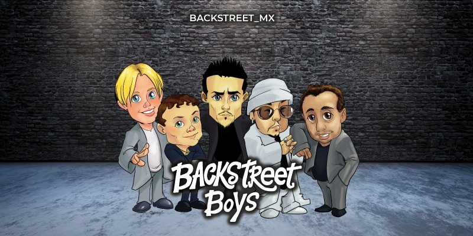

BackStreet Boys
Historia
Backstreet Boys es una boy band estadounidense de música pop fundada en Orlando, Florida, el 20 de abril de 1993. La banda está integrada por A. J. McLean, Howie Dorough, Brian Littrell, Nick Carter y Kevin Richardson.
Saltaron a la fama con su álbum debut, Backstreet Boys (1996). El siguiente álbum, Backstreet's Back (1997) continuó con el éxito del grupo en todo el mundo. Llegaron al estrellato con su álbum Millennium (1999) y el álbum siguiente, Black & Blue (2000).
También lanzaron un álbum de grandes éxitos, The Hits - Chapter One (2001). Los álbumes Backstreet Boys y Millennium fueron certificados como diamantes por la Recording Industry Association of America (RIAA).
Después de un descanso de tres años, la banda ha lanzado cinco álbumes Never Gone (2005), con el que Richardson dejó el grupo, Unbreakable (2007), This Is Us (2009), NKOTBSB junto a los New Kids on the Block (2011), In a World Like This con el regreso de Kevin (2013) celebraron su vigésimo aniversario con su primer álbum independiente, y luego de 6 años su reciente álbum DNA (2019), debutó en el número uno, más de dos décadas después de que se formara el grupo, y 19 años después de su última cima en 2000.
La banda ha vendido más de 110 millones de producciones musicales, lo que los convierte en la boy band más vendida de todos los tiempos y en uno de los artistas musicales más vendidos del mundo.
Se convirtieron en la primera boy band en encabezar las listas de álbumes de Estados Unidos en tres décadas.